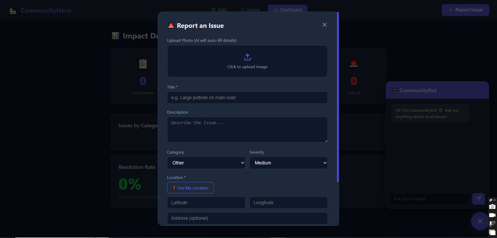
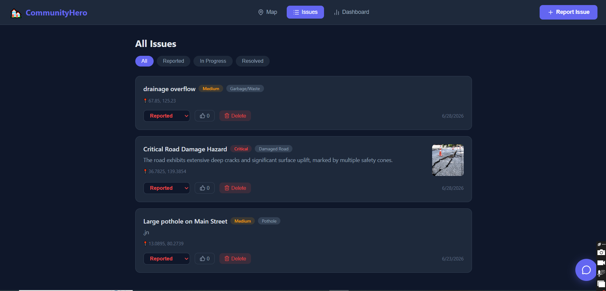
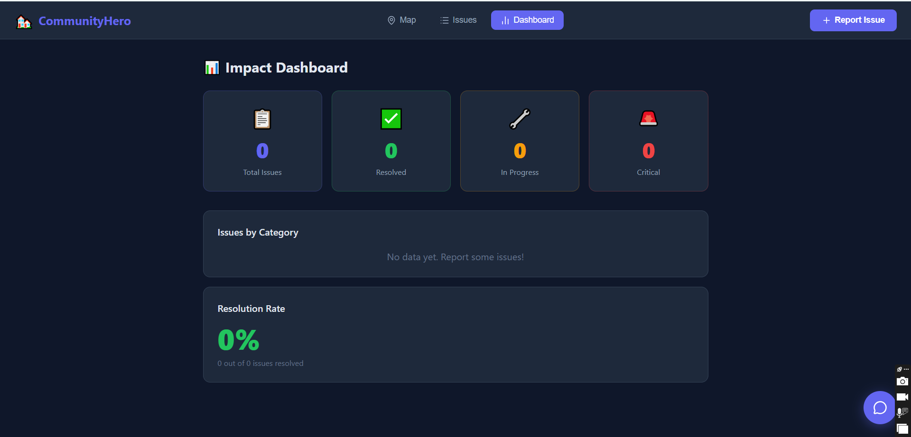
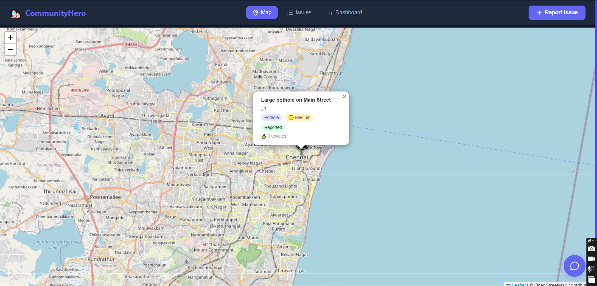
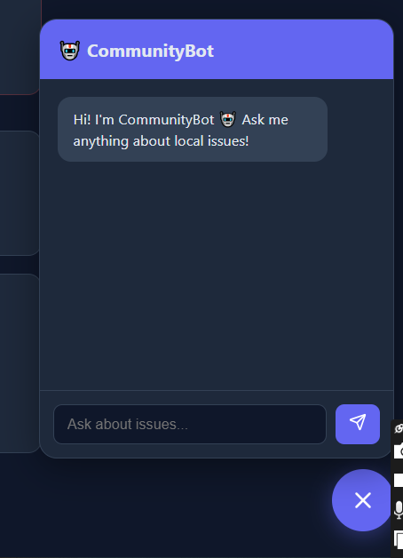

FixIt enables citizens to identify, report, track, and resolve community problems like potholes, water leakages, broken streetlights, and waste management issues — powered by Google Gemini AI.
👉 https://community-hero-ten.vercel.app/
| Layer | Technology |
|---|---|
| Frontend | React + Vite |
| Backend | Node.js + Express |
| Database | MongoDB Atlas |
| AI | Google Gemini 2.5 Flash |
| Maps | Leaflet.js + OpenStreetMap |
| Deployment | Vercel (frontend) + Render (backend) |
Clone the repo:
git clone https://github.com/AngellinaJoycePaul/community-hero.git
cd community-hero
Setup Backend:
cd backend
npm install
cp .env.example .env
# Fill in your credentials in .env
node index.js
Setup Frontend:
cd frontend
npm install
npm run dev
Create a backend/.env file:
PORT=5000
MONGODB_URI=your_mongodb_uri
GEMINI_API_KEY=your_gemini_api_key
Below are screenshots from the app (stacked):





Angellina Joyce Paul — GitHub
Built for the Vibe2Ship 2026 🏆